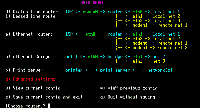
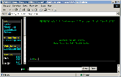

Edwin Martin <edwin@bitstorm.org>
Laatst gewijzigd: 1 juni 2002
Deze hands-on verscheen op de CD-Rom's bij de PC-Active van december 2000 en februari 2001.
De kans is groot dat u thuis allang niet meer de enige internet-gebruiker bent. Als u bij uw ouders thuis woont, maken zij misschien ook gebruik van het internet en anders wel uw broer of zus. Of u hebt een vriendin, vriend, vrouw of man die net als u ook wilt e-mailen. En als u kinderen hebt dan willen die vast ook op het internet of anders wel over een paar jaar. Hoe krijgt u dat voor elkaar?
Met meer mensen tegelijkertijd op het internet, dat kan vaak niet. Bijvoorbeeld omdat er maar één computer is. Maar zelfs als iedereen zijn eigen computer heeft, kan het nog steeds lastig zijn om samen het internet op te gaan. Er is bijvoorbeeld maar één telefoonlijn. Of op de kabelmodem kan maar één computer worden aangesloten.
Een oplossing is om een klein netwerkje aan te leggen en op de op internet aangesloten computer een proxy te installeren. De proxy kan in de webbrowsers op de andere computers worden ingesteld en iedereen kan het web op. Een groter probleem wordt het om van de andere computers te e-mailen, laat staan te ICQ-en en Quaken.
Daarnaast is het internet niet toegankelijk als de internetcomputer vastloopt, herstart of gewoon uitstaat.
De beste oplossing voor deze problemen is het installeren van een router. Nu denkt u misschien: "routers zijn toch peperdure machines die Cisco maakt?". Inderdaad. maar met Freesco kunt u van een oude 486-computer een prima routertje maken. En Freesco is helemaal gratis, vandaar "Freesco", een samentrekking van "Free Cisco".
Het klinkt misschien een beetje ingewikkeld om van een oude computer een router te maken, maar dat valt best mee. Freesco is een soort mini-Linux die op één floppydisk past. Door van deze floppy op te starten bent u nog maar een paar stappen verwijderd van een heuse eigen router.
De router doet ook dienst als firewall, dus de computers zijn ook nog eens goed beschermd tegen kwaadwillenden die via het internet uw computer onder handen willen nemen. Dit betekent onder andere dat u nu zonder problemen mappen en printers tussen computers kunt delen.
Als u wilt inbellen, installeert u de modem en de netwerkkaart. Heeft u een kabelmodem met ethernet, dan installeert u twee ethernetkaarten: één voor de modem en één voor het thuisnetwerk.
In deze hands-on wordt bij een kabelmodem uitgegaan van een kabelmodem met een ethernetaansluiting. Heeft u een kabelmodem met een serieële (COM) aansluiting, dan dient u de installatieprocedure van een normaal modem te volgen. Eventueel dient u van de beschreven procedure enigszins af te wijken.
Ethernetkaarten zijn er in verschillende soorten. Voor Freesco is het van belang of kaart geschikt is voor een ISA of PCI-bus. Een goedkope NE2000 is gewoonlijk het ISA-type. Het type bus voor een 3Com kaart is te vinden in de 3Com produkt matrix. Intel-bezitters kunnen kijken in de lijst van Desktop Adapters. Als u nog niet weet of het een ISA of PCI-model is, dan kunt u ook de PC-kast openmaken en kijken in wat voor kleur sleuf de kaart zit (of past). Zwart is ISA en wit is PCI.
ISA ethernetkaarten kunnen op twee manieren geïnstalleerd worden: Plug-en-play en Jumperless. Zet voor Freesco de kaarten op Jumperless. U kunt dit doen met een programma dat met de kaart wordt meegeleverd (setup.exe of config.exe). Dit programma dient u meestal onder DOS uit te voeren.
Bij het instellen op Jumperless wordt om een IRQ en een port gevraagd. IRQ's 10 en 11 en poorten 0x300, 0x320 en 0x340 zijn hiervoor gebruikelijke waarden. Zet bijvoorbeeld bij twee kaarten de ene kaart op IRQ 10 en port 0x300 en de andere op IRQ 11 en port 0x340. Maar bij conflicten met andere apparaten zijn natuurlijk ook andere waarden te gebruiken.
Schrijf de waarden op, want die moeten straks worden ingevuld.
Hebt u een PCI-versie, dan kunt u straks gewoon op <enter> drukken als om de IRQ en poort wordt gevraagd.
Het Freesco zipbestand bevat een floppy-image, die op de Freesco bootflop moet komen. De image (freesco.026) kunt u niet zomaar naar de floppy kopieëren, maar dat moet met een speciaal programma gebeuren. Onder DOS of Windows kan dat met make_fd.bat, dat ook in het zipbestand te vinden. Voer dit batchprogramma uit om de floppy van begin tot einde te beschrijven. Zo wordt ook de bootsector beschreven, zodat de flop gelijk klaar is om van op te starten.
Nu is het nog een kwestie van de computer opstarten van de Freesco floppydisk. Stop (of laat) de floppy in de computer en herstart de computer. Type, als de 'boot:'-prompt verschijnt, 'setup' en druk op <enter>. Linux wordt nu gestart.
Even later verschijnt de 'login:'-prompt. Login met 'root' en gebruik als wachtwoord ook 'root'. Als de setup niet vanzelf start, kunt u hem ook zelf starten door 'setup' te typen en op <enter> te drukken. Druk na het eerste scherm op <enter>.

Hoofdmenu - klik voor een vergroting
Nu verschijnt een scherm waarin u het type router kunt kiezen. Vanaf hier kunt u kiezen voor de installatie van een kabelmodem of van een gewoon inbelmodem.
Bedenk dat hoe minder geheugen de computer heeft, hoe minder diensten (services) u kunt aanzetten. Kies bij minder dan 8MB voor zo min mogelijk diensten, dus geen DHCP, DNS, telnet en http-server.
Heeft u een gewoon inbelmodem, dan kiest u in het hoofdmenu voor d. De reeks vragen die worden gesteld, worden hieronder verklaard.
Heeft u een kabelmodem met ethernet, dan kiest u in het hoofdmenu voor e. De reeks vragen die worden gesteld, worden hieronder verklaard.
Als de lange lijst met vragen doorlopen is, drukt u op <enter> om naar het volgende scherm te gaan. Kies nu 's' en <enter> om alle instellingen op de floppy te bewaren. Als dat gedaan is, herstart u de computer door op de reset-knop te drukken.
Het moment van de waarheid is daar: de computer start op van de zojuist geconfigureerde floppydisk. Doet hij het gelijk goed of hebben we een configuratiefout gemaakt?
Als de computer is opgestart, staat op het scherm een lijstje met geactiveerde programma's. Als hier foutmeldingen tussen staan, probeer dan aan de hand van de melding en waar de melding achter staat erachter te komen wat er fout gaat. Kijk ook onder het kopje 'probleemoplossing' voor oplossingen.
Ziet u geen foutmeldingen? Dan is de kans groot dat alles goed is gegaan.
Let op! Zelfs als alles nu werkt, bent u nog niet helemaal klaar! U heeft het belangrijke root-wachtwoord nog niet veranderd. Zo kan iedereen vanaf het internet inloggen op de router en zo op uw interne netwerk komen.
Log in als 'root', met als wachtwoord ook 'root'. Type nu 'passwd' en <enter>. U kunt nu een nieuw wachtwoord opgeven.
Als u 'router control via HTTP' hebt ingeschakeld, dient u ook daarvan het wachtwoord te wijzigen. Dat gaat net iets anders. Type het volgende in: 'htpasswd /wwa/cgi/.htpasswd admin' en druk <enter>. Voer nu opnieuw een nieuw wachtwoord in.
Als u in Freesco de DHCP-server heeft ingeschakeld (Enable DHCP server: y), dan kunt u op de werkcomputers ook DHCP inschakelen. Als u dan uw computer opstart, dan worden de internet-instellingen zoals het IP-adres automatisch door Freesco toegekend. Alle moderne besturingssystemen kunnen met DHCP overweg.
Klik met de rechtermuisknop op het ikoon Netwerkomgeving op de desktop en kies Eigenschappen. Selecteer in het lijstje met netwerkonderdelen TCP/IP -> (uw netwerkkaart). Klik Eigenschappen. In het tabblad IP-adres selecteert u 'Automatisch een IP-adres verkrijgen'. In het tabblad DNS-configuratie selecteert u 'DNS uitschakelen'. Klik OK en nogmaals OK.
Werkt DHCP? Klik Start en Uitvoeren. Type achter Openen: winipcfg en klik OK. Selecteer in het uitklapmenu uw netwerkkaart. Achter Standaardgateway moet het IP-nummer van de Freesco-computer staan en achter IP-(autoconfiguratie)adres het IP-adres van uw werkcomputer. Dit IP-nummer moet in het eerder (in Freesco) opgegeven IP-range liggen. Als u bij IP-range '192.168.0.100 192.168.0.200' hebt ingevuld, dan is dit nummer bijvoorbeeld 192.168.0.100 of 192.168.0.101. Als dit niet het geval is, klikt u op Vernieuwen. Als de IP-nummers nog niet kloppen, dan is er iets mis met de verbinding tussen de werkcomputer en de Freesco-computer.
Klik met de rechtermuisknop op 'Mijn netwerklocaties' en kies Eigenschappen. Klik vervolgens met de rechtermuisknop op 'LAN-verbinding' en kies weer Eigenschappen. Kies in het lijstje met protocollen 'Internet-Protocol (TCP/IP)'. Klik eigenschappen. Zorg dat zowel 'Automatisch een IP-adres verkrijgen' en 'DNS-serveradres automatisch verkrijgen' beide geselecteerd zijn. Klik OK en nogmaals OK.
Klik Start en Uitvoeren. Type achter Openen: command en klik OK. Type 'ipconfig /all'. Achter Standaardgateway moet het IP-nummer van de Freesco-computer staan en achter IP-(autoconfiguratie)adres het IP-adres van uw werkcomputer. Dit IP-nummer moet in het eerder (in Freesco) opgegeven IP-range liggen. Als u bij IP-range '192.168.0.100 192.168.0.200' hebt ingevuld, dan is dit nummer bijvoorbeeld 192.168.0.100 of 192.168.0.101. Als dit niet het geval is, dan typt u 'ipconfig /renew'. Als de IP-nummers nog niet kloppen, dan is er iets mis met de verbinding tussen de werkcomputer en de Freesco-computer.
Klik op het Appeltje linksboven en kies Regelpanelen en TCP/IP. Zorg dat achter Configuratie 'Gebruik DHCP Server' geselecteerd is.
Hieronder vind u een aantal vragen met passende oplossingen.
Als uw Engels goed genoeg is, kunt u natuurlijk altijd de officiële Freesco Manual raadplegen.
Als u 'router control via HTTP' hebt ingeschakeld, kunt u de router ook via een webbrowser instellen. Zo kunt u bijvoorbeeld een modem laten inbellen of juist laten ophangen. Type op de adres-regel van een browser het IP-nummer van de router in, met daarachter een dubbele punt en het poortnummer van de router control, bijvoorbeeld '192.168.0.1:82'. U krijgt nu de mogelijkheid om in te loggen. Gebruik als username 'admin' en als wachtwoord het eerder gewijzigde wachtwoord (zie 'Wachtwoord wijzigen').

Router control - klik voor een vergroting
De Freesco router kan ook dienst doen als timeserver, printerserver, webserver en nog veel meer. Hier gaan we niet verder op in. Meer informatie over Freesco is te vinden op de Freesco website.
Sommige providers verbieden het delen van de internetverbinding. Neem bijvoorbeeld de algemene voorwaarden van Chello:
"Het is de Klant niet toegestaan de dienst, of onderdelen daarvan, door te verkopen aan, of te delen met derden, te verspreiden, of anderszins commerciële activiteiten met behulp van de Chello Service te ontwikkelen"
Chello heeft mij verteld dat dit voor particuliere gebruikers die een huisnetwerkje maken, door de vingers wordt gezien. Deze voorwaarden lijken dus meer van toepassing voor bijvoorbeeld bedrijven en internetcafe's.
Verder is het niet zo dat de internetaanbieder kan 'zien' dat een internetverbinding wordt gedeelt. Hoogstens is te zien dat een Linux-computer wordt gebruikt. Maar dit hoeft niet te betekenen dat het om een router gaat: Linux is ook prima geschikt om te surfen en e-mailen.
UPC (Chello) is overigens van plan de algemene voorwaarden te versoepelen. Lees dit artikel uit Emerce:
{kind=link}
{kind=link}
{kind=link}
{kind=link}
{kind=link}
{kind=link}
{kind=link}